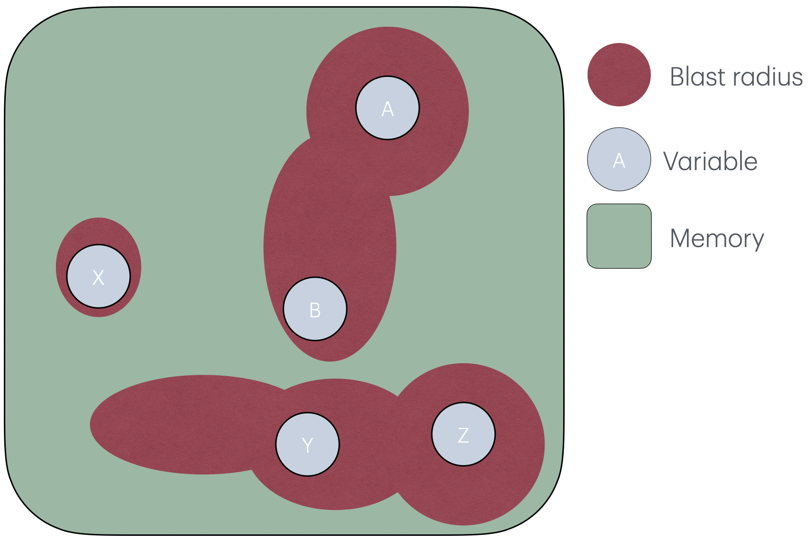

Fully mechanises a probabilistic small-step operational semantics of Rowhammer faults and information-flow security in Lean using Mathlib.
Abstract
Rowhammer is a hardware vulnerability in dynamic random-access memory (DRAM) in which repeated accesses to aggressor rows can induce bit-flips in victim rows. This phenomenon violates a core assumption of conventional programming language semantics: reading or writing one memory location does not modify others. Despite the security importance of this phenomenon, there is no formal framework connecting Rowhammer faults with program behaviour. We present a probabilistic small-step operational semantics for an idealised imperative language subject to Rowhammer-style faults. The semantics abstracts from DRAM internals and semiconductor physics. A general probabilistic fault model parameterises the semantics, representing Rowhammer-style faults by assigning probabilities to bit-flips during read or write operations. The resulting distributions are propagated through programs using the standard monadic structure of probabilistic computation. As a case study, we formalise a well-known defence that places program variables sufficiently far apart in physical memory that an access to one variable cannot disturb another. We prove a distribution-independent semantic collapse theorem: for every finite execution, including prefixes of terminating and non-terminating executions, the protected projection of the probabilistic Rowhammer semantics is the Dirac distribution of the corresponding Rowhammer-free execution. We develop an observation-parametric account of secure information flow. Non-interference is expressed as a hyperproperty comparing the distributions of low observations from low-equivalent initial memories. Consequently, physical separation preserves non-interference for every admissible fault model, while every Rowhammer non-interference violation reflects a violation already present in the Rowhammer-free semantics. The development is fully mechanised in Lean using mathlib.
Problem
Rowhammer faults violate the memory-locality assumption underlying programming language semantics, and no formal framework connects such hardware faults with program behaviour and security properties.
Approach
A probabilistic small-step operational semantics for an idealised WHILE language is defined, where read/write transitions sample from a general probabilistic fault model assigning bit-flip probabilities via a 'blast radius' per location. Distributions are propagated using the probability monad (PMF). Physical separation is formalised as a defence, and non-interference is expressed as an observation-parametric hyperproperty over protected views. The entire development is mechanised in Lean with Mathlib.

Figure 4. The idea behind the fault model is that each variable x has a ’blast radius’, a set of other memory locations that may get flipped when x is accessed. Locations outside the blast radius will not be flipped. The fault model formalises the shape of each blast radius, and the flip probabilities. Unlike Figures 2 and 3 , this image does not show row shapes, because our formal model does not
Results
A distribution-independent semantic collapse theorem is proved: on protected projections, the probabilistic Rowhammer semantics reduces to the Dirac distribution of the Rowhammer-free execution. Consequently physical separation preserves relative non-interference for every admissible fault model.